User guide
- Transactions
- Basic navigation
- Response time
- Continuous profiling
- Slow traces
- Scatter chart
- Individual traces
- External queries
- Errors
- Basic navigation
- Error messages
- Error traces
- Scatter chart
- Individual traces
Basic navigation
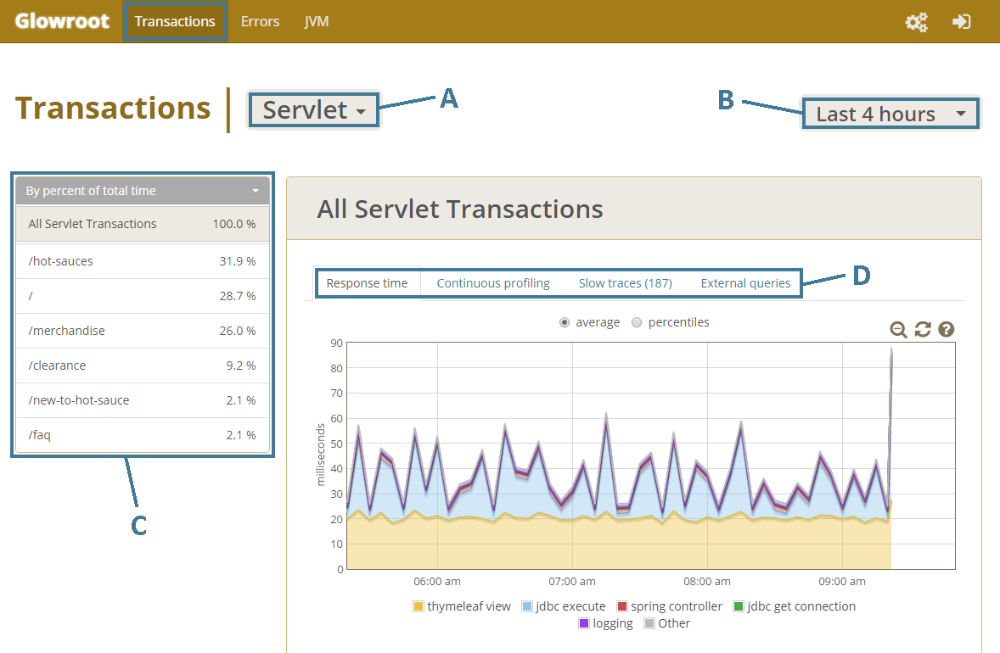Transaction type (A)
With the default set of plugins, there are two transaction types, Servlet and Background (e.g. Quartz jobs). Additional plugins or UI configured instrumentation can define other transaction types.
Time period (B)
Select the time period. There are multiple rollup levels so you can view fine-grained detail for more recent time periods, but still access older data at coarser-grained levels. The rollups and disk space limits can be customized under the Configuration menu.
Transaction (C)
Select a specific named transaction, or view the data across 'All Transactions' (of the selected transaction type). The default transaction names can be overridden by plugins and/or UI configured instrumentation.
Tab (D)
Select the tab of data to view for the selected transaction over the selected time period. See below for detailed coverage of each tab.
Bonus!
All pages are url addressable, the currently applied filters are always part of your current url, and the browser back/forward buttons work as expected!
Response time (average)
Charts the average response time, broken down by the top 5 timers over the given time period.
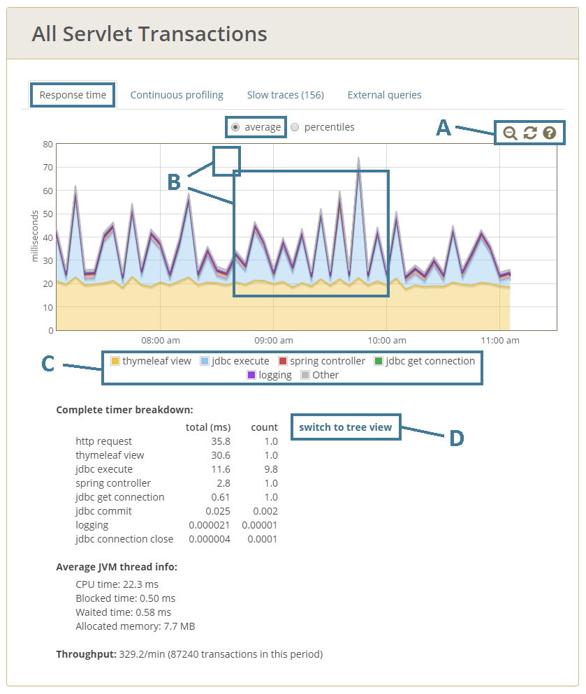Chart controls (A)
Chart tooltip (B)
Chart legend (C)
Complete timer breakdown
Timer breakdown view: Flat vs Tree (D)
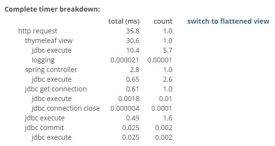
Average JVM thread info
Throughput
Response time (percentiles)
Charts arbitrary percentiles over the given time period.
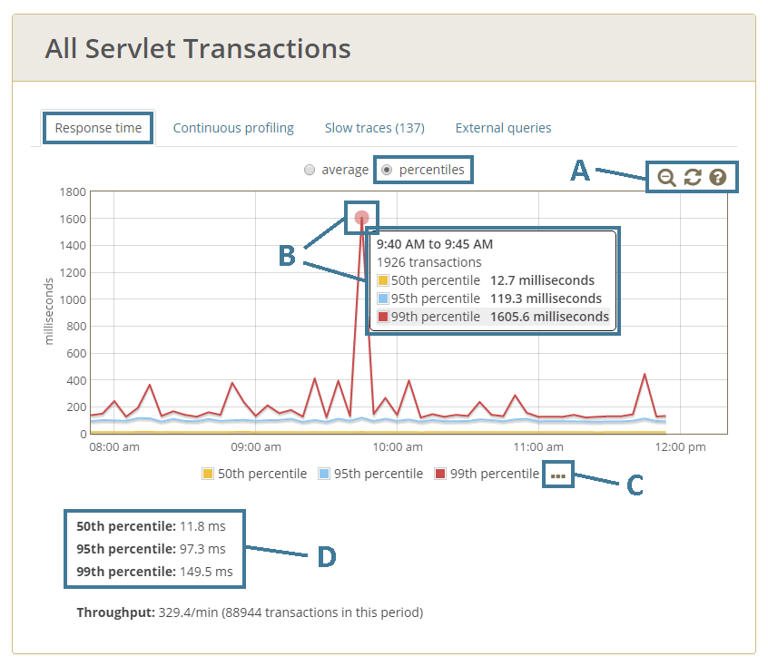Chart controls (A)
Chart tooltip (B)
Percentile selection (C)
Percentiles over the full time period (D)
Displays the response time percentiles over the full time period.
Continuous profiling (tree view)
View profiling data for the given time period.
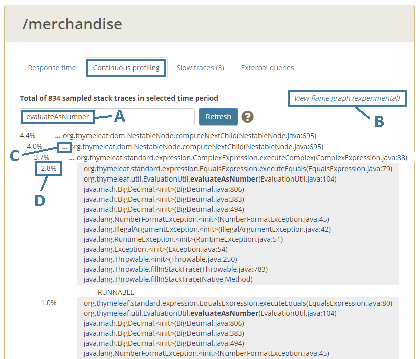Filter (A)
Flame graph (B)
Expand nodes (C)
Node percentage (D)
Continuous profiling (flame graph)
TODO contract nodes before rendering flame graph, then get new picture of full "flame" graph, but without height problem.
From the continuous profiling view (above), you can view a flame graph representation of the (possibly filtered) profile.
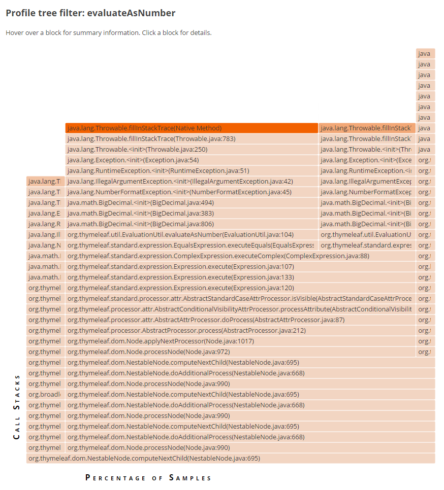Slow traces (scatter chart)
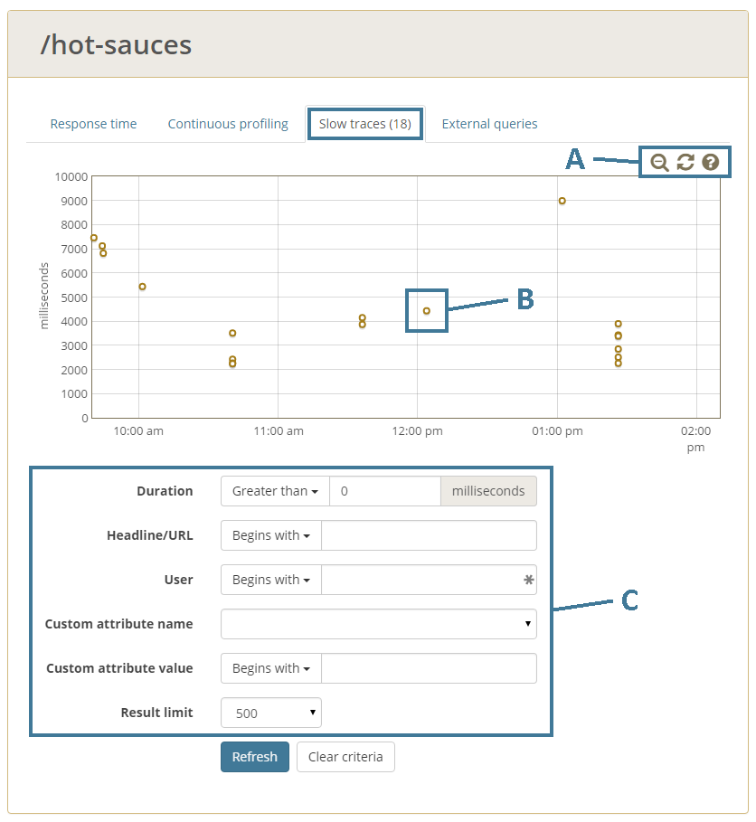Chart controls (A)
Slow traces (B)
Filters (C)
Individual slow trace (header)
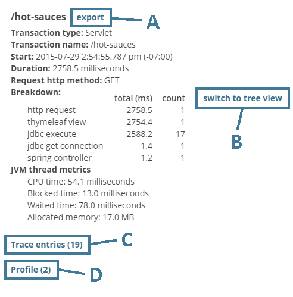Individual slow trace (trace entries)
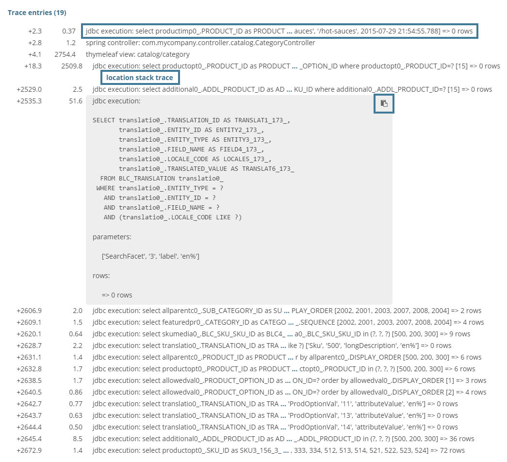Individual slow trace (profile)
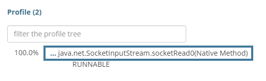External queries
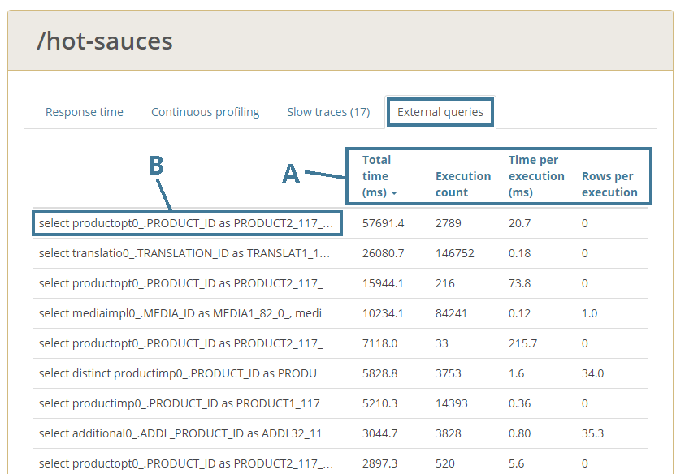Sorting (A)
Full query text (B)
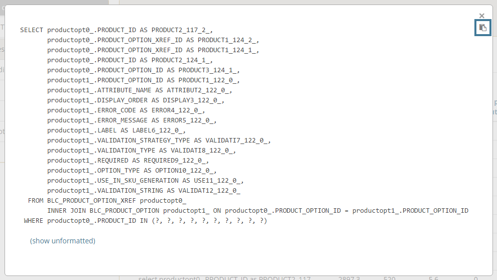
Basic navigation
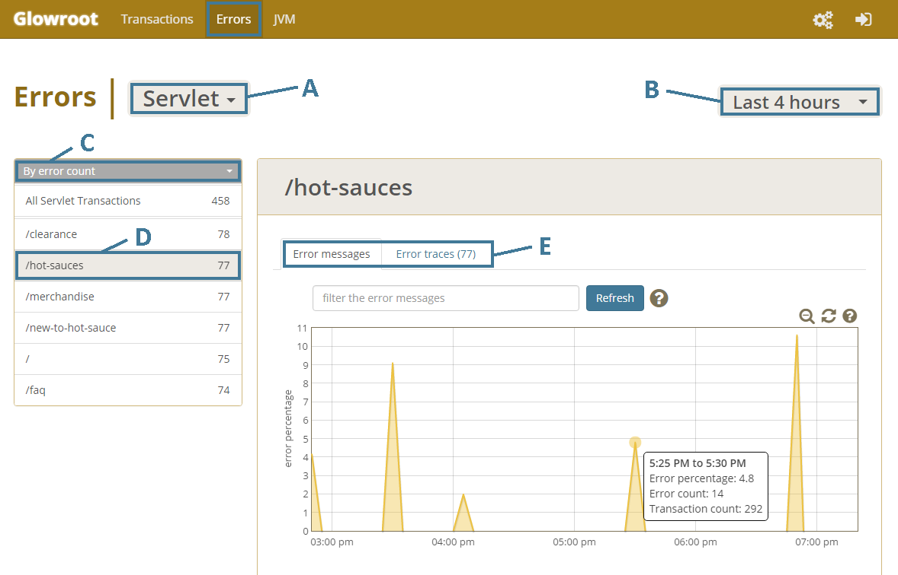A
B
C
D
E
Error messages
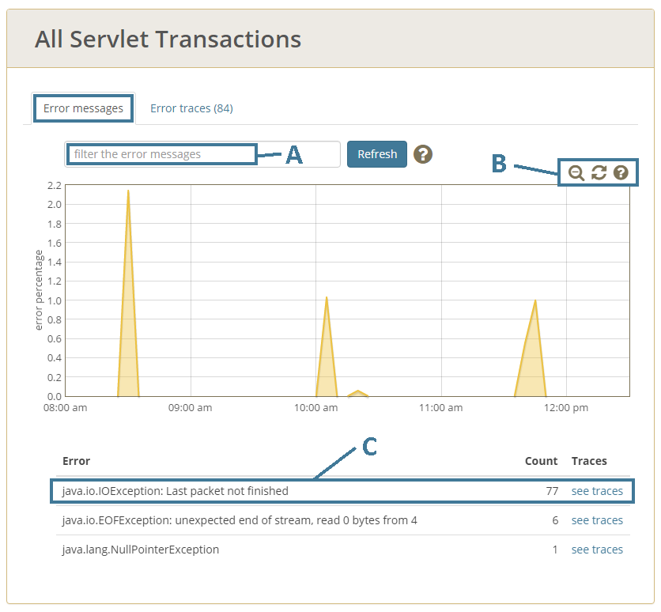Error traces (scatter chart)
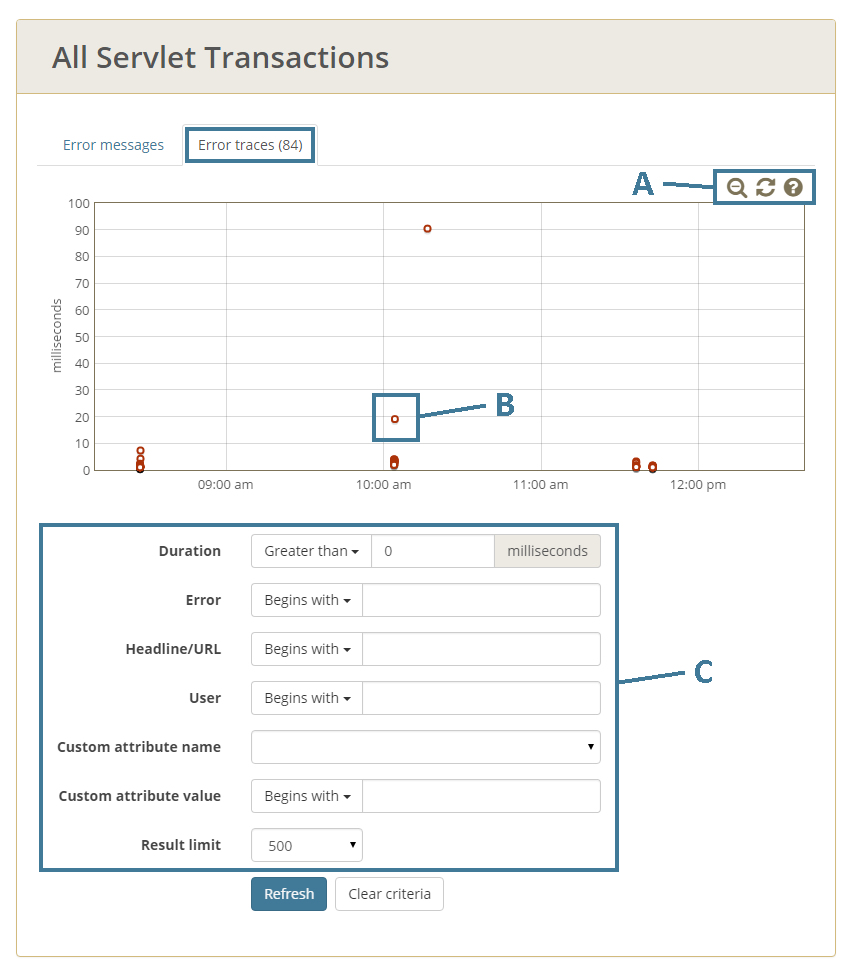Individual error trace (header)

Individual error trace (trace entries)

Gauges
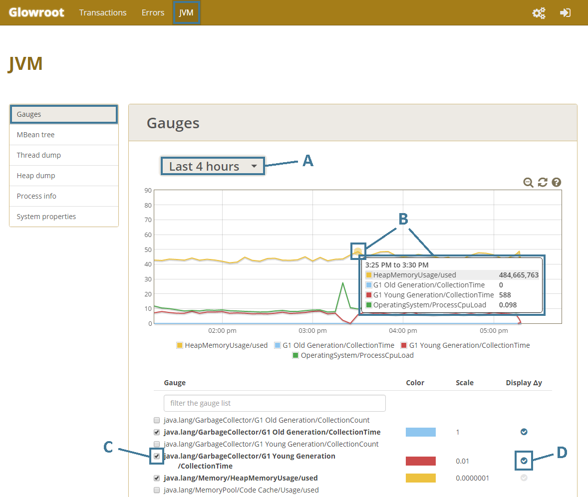